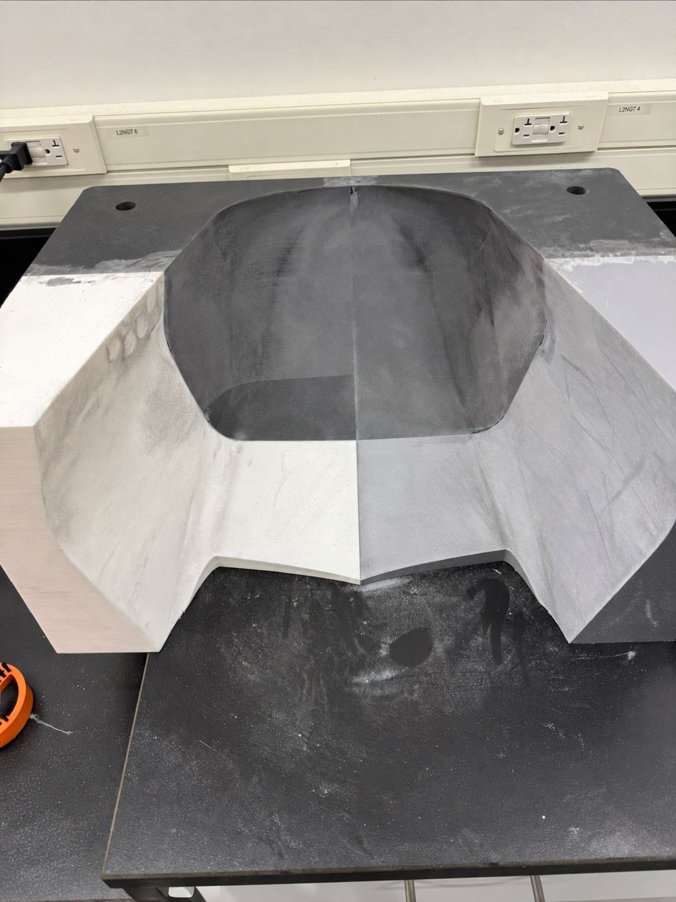
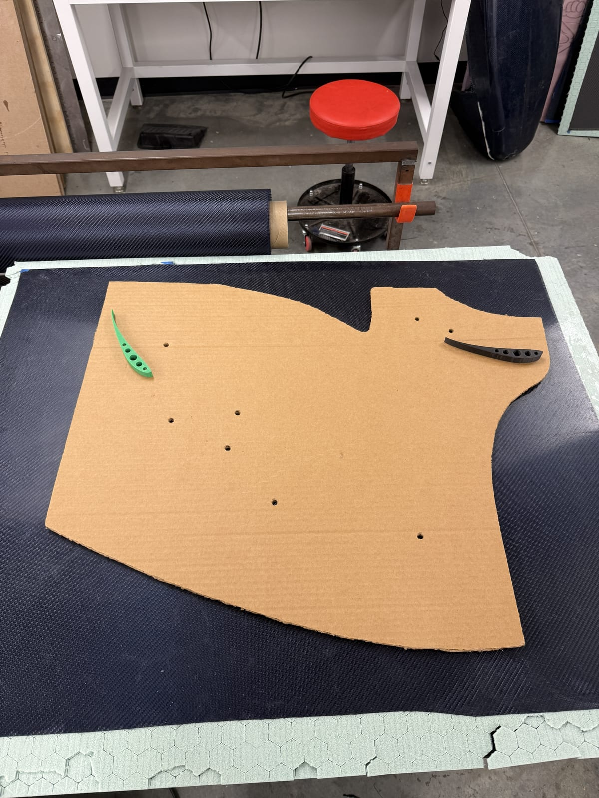
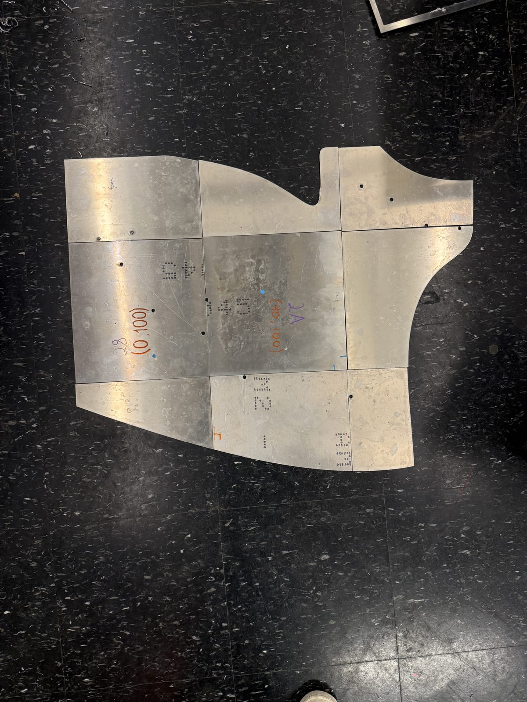
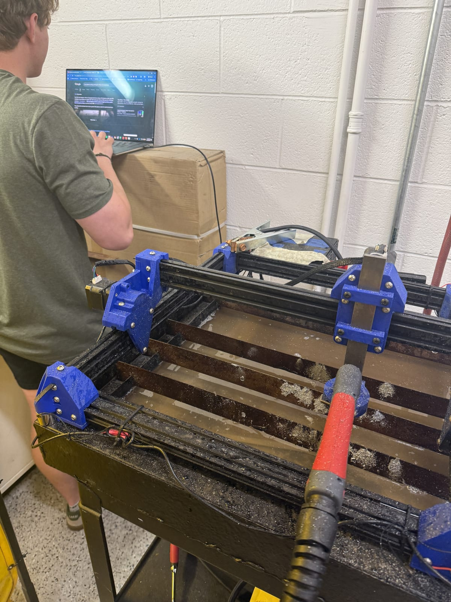
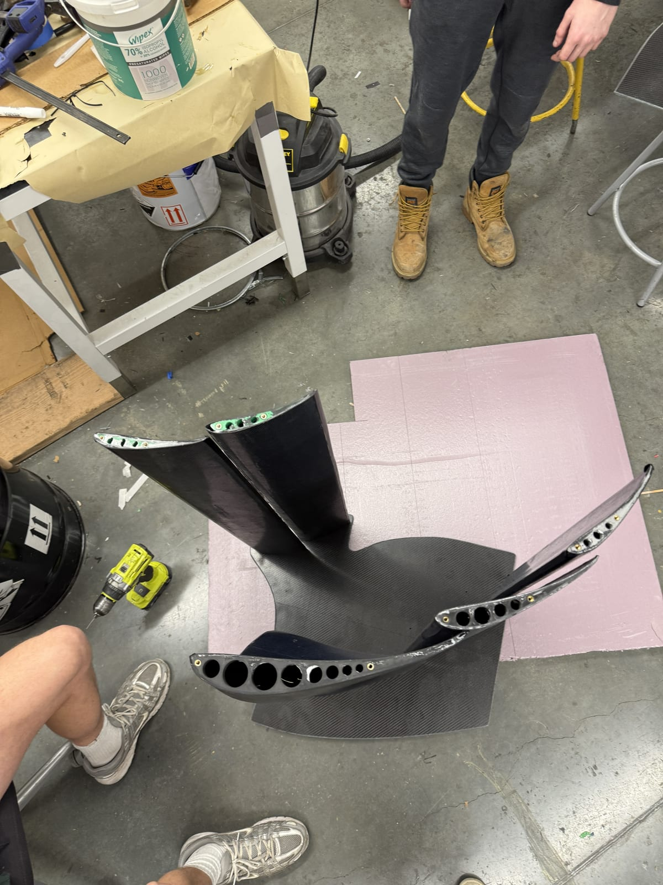

Overview
In my freshman spring on NovaRacing, I manufactured 20+ carbon-fiber parts for VU17’s aerodynamic package: the front and rear wings, undertray, nosecone, sidepods, and body panels. Schedule delays compressed manufacturing into three months, and we finished the package in time for competition.
I attended competition and joined aerodynamic design judging with a senior capstone teammate. Limited testing left the package’s full-car performance unvalidated, and two engine failures cut our event short. The judges’ takeaway: set downforce, drag, balance, and cooling targets early, and let simulation and testing drive design before manufacturing.
Made possible by the support and guidance of the senior capstone team (pictured in the gallery), and the help of Luke Gustafson ’27, Matthew Parker ’27, Luke VanEmburgh ’27, and Randall Preson ’29.
- Car
- VU17
- Output
- 20+ carbon-fiber parts
- Tooling
- 10+ PLA & CNC-routed MDF molds, 60–4000 grit
- SolidWorks
- Wet Layup & Resin Infusion
- Mold Preparation
- Finishing
- Manual Mill & Band Saw
Mold Preparation
Every part started as a mold, 10+ in all. The 3D-printed PLA molds were sanded from 60 to 4000 grit to remove transferred print lines and give the carbon the best aerodynamic surface finish possible.
Larger molds began as MDF sheet stock glued into blocks, then cut on the CNC router. They went through the same sanding procedure, then were sealed with polyurethane and coated in PVA release film before layup.


Wet Layup
Carbon-fiber plies were laid into the prepared molds by hand and wetted out with epoxy, working resin through each layer before the next went down. The body panels were done together as one large layup, then vacuum-bagged to consolidate the plies while they cured.
The focus was even resin coverage and tight conformity to the mold, keeping dry spots and trapped air out of the laminate.


Resin Infusion
The nosecone was manufactured using resin infusion, with dry carbon fiber laid into the mold, sealed under a vacuum bag, and infused with a 10:3 resin-to-hardener mixture under vacuum.
The process helped control excess resin and compact the fiber layers, producing a very lightweight, rigid nosecone. The main challenges were preventing microbubbles from becoming trapped within the laminate and achieving even resin flow across the entire mold surface.

Post-Processing & Assembly
After curing, the carbon-fiber components were trimmed, sanded, and finished to remove excess material, smooth edges, and prepare mating surfaces for assembly. Clear coating and polishing improved the surface finish, while clamps held components in alignment during bonding and assembly. Fit checks confirmed the alignment of panels, wing elements, and mounting interfaces.
For the rear wing, a laser-cut stencil transferred the complex endplate outline and mounting-hole locations onto the carbon panel, preserving alignment with the internal mounting ribs of each wing element. The stencil geometry was modeled precisely in SolidWorks within the complete rear-wing assembly to establish the relationship between the endplate profile, element positions, and attachment points. Additional mounting holes provided an alternate setting: each element could pivot about its rear mounting hole and be secured through a secondary hole at a −1° angle of attack, intended to reduce drag from the S1223 wing elements.





